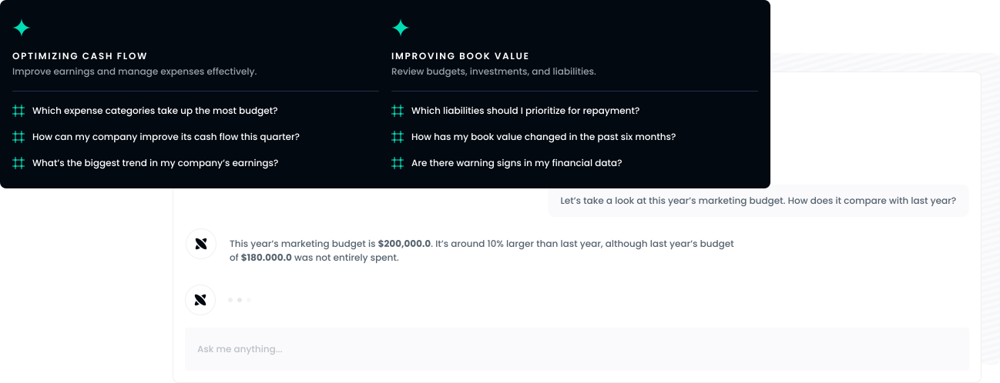
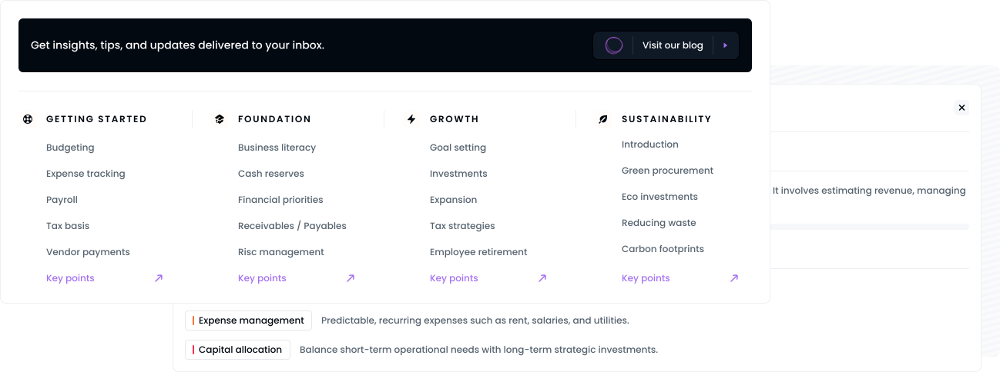

The Growing Startup
Focused on managing cash flow and scaling efficiently, early-stage companies need a smart way to track small business expenses, revenue, and budgets.
Explore the features
Empower growth with a financial advisor business tool powered by AI.

Who Benefits Most
From saving for tomorrow to simplifying today. Whether you’re saving, tracking your expenses, or planning for the long term.
The Growing Startup
Focused on managing cash flow and scaling efficiently, early-stage companies need a smart way to track small business expenses, revenue, and budgets.
The Established Company
For organizations with complex financials needing a refined approach to company financial analysis and tracking debt, investments, and expenses.
Eco-Conscious Business
Eco-driven companies that align environmental goals with profit by tracking carbon footprint and finances using business and sustainability practices.
Optimize your operations
Track earnings and expenses with precision. Simplify operations and manage cash flow efficiently to improve your company’s financial health.


Understand the value
See a clear breakdown of your company’s budgets, investments, and debt. Uncover your company book value and gain better financial perspective.
Intelligent Guidance
Get real-time answers to financial questions. Make informed decisions with tailored support from your built-in financial advisor business tool.

Learn and Grow
Access expert resources to strengthen financial planning of business and literacy. Equip your team with the skills to support long-term success.

Start Your Journey
Try Scripnote for free and experience how simple it is to keep your business finances organized. Start your journey toward better planning today!
Start free trialWords of Wisdom
Discover powerful quotes from great minds to inspire your financial journey.
An investment in knowledge pays the best interest
Benjamin FranklinTough times never last, but tough people do
Robert H. SchullerKnow what you own, and know why you own it
Peter LynchExplore these common queries to understand how Scripnote could fit into your financial journey.
Scripnote focuses on simplicity by removing unnecessary complexities, helping businesses of any size streamline financial management and make informed decisions with ease.
The “Ask AI” feature delivers personalized insights for your company by answering financial questions, highlighting cash flow risks, analyzing book value, and providing tailored advice to support better business decisions.
The “Coaching” section provides curated insights, articles, and tools that help teams build financial confidence, improve decision-making, and align business planning with long-term goals such as growth and sustainability.
The “Cash flow” section provides a precise view of earnings and expenses so you can simplify financial management, control costs, and improve your company’s financial health.
The “Book value” gives businesses a clear breakdown of budgets, investments, and debt, helping companies understand liabilities and long-term financial stability.
Every financial activity has an environmental impact. Scripnote’s carbon footprint tracking helps businesses monitor CO2e alongside financials to align profit with sustainability goals.
Yes. We offer a free trial so you can evaluate how Scripnote fits into your company’s financial workflow.
Yes. Startups use Scripnote to track small business expenses and cash flow, while established companies use it for deeper company financial analysis, budgeting, and book value tracking.